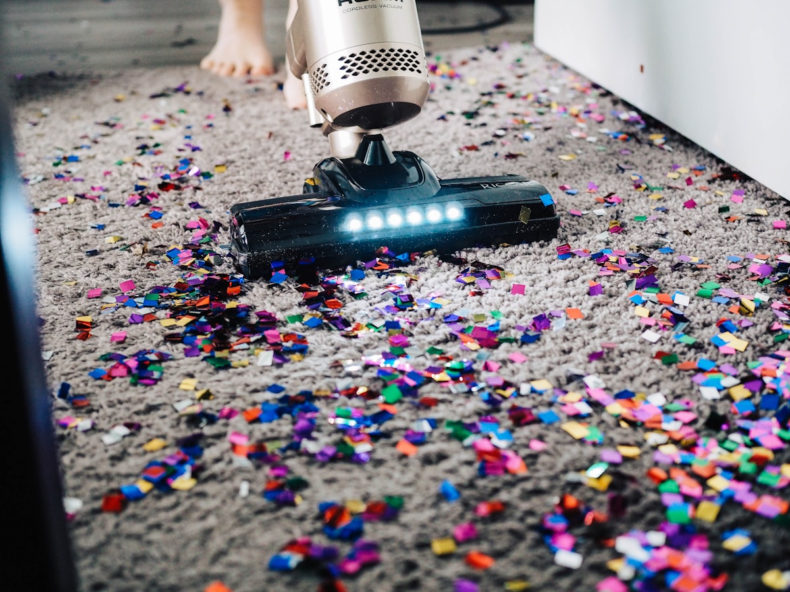
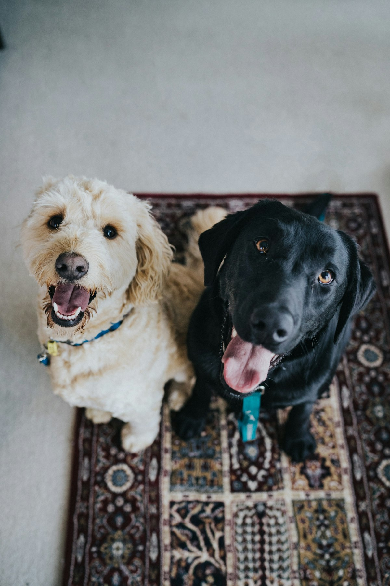
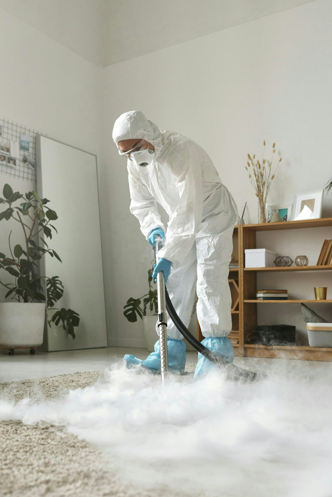
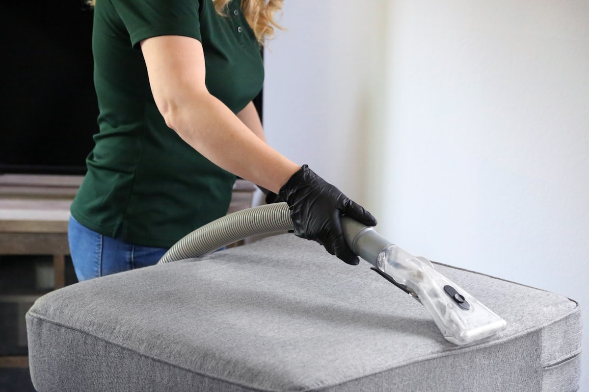

Carpet Cleaning Tips & Advice
Expert advice from Your Local Carpet Cleaner — Sydney's trusted family cleaning specialists with over 20 years of experience.

How Often Should You Get Your Carpets Professionally Cleaned in Sydney?
Most Sydney homeowners don't clean their carpets nearly often enough — and the consequences go well beyond appearance. Dust mites, allergens, and embedded grit can damage carpet fibres and affect indoor air quality long before the carpet looks dirty.
Read Article arrow_forward
How to Get Rid of Pet Odour from Carpet (And When to Call a Professional)
Pet odour in carpet is one of the trickiest problems homeowners face. The smell keeps coming back — and there's a scientific reason for that. Here's what actually works.
Read Article arrow_forwardEnd of Lease Carpet Cleaning in Sydney — What You Need to Know
Losing your bond over carpet cleaning is more common than you'd think. This guide covers exactly what's required, what to expect from a professional clean, and how to protect your deposit.
Read Article arrow_forward
Steam Cleaning vs Dry Cleaning — Which Is Better for Your Carpet?
It's one of the most common questions we get. Both methods work — but for different situations. Here's a straight-talking comparison so you can make the right call for your carpets.
Read Article arrow_forwardHow to Remove Common Carpet Stains at Home (Before They Set)
Speed is everything with carpet stains. Most common stains can be significantly reduced with the right technique in the first 10 minutes — here's exactly what to do for each type.
Read Article arrow_forward
Is Professional Upholstery Cleaning Worth It? What Sydney Homeowners Should Know
Your sofa takes as much punishment as your carpet — but most people clean it far less often. We break down exactly what professional upholstery cleaning involves and whether it's worth the cost.
Read Article arrow_forward